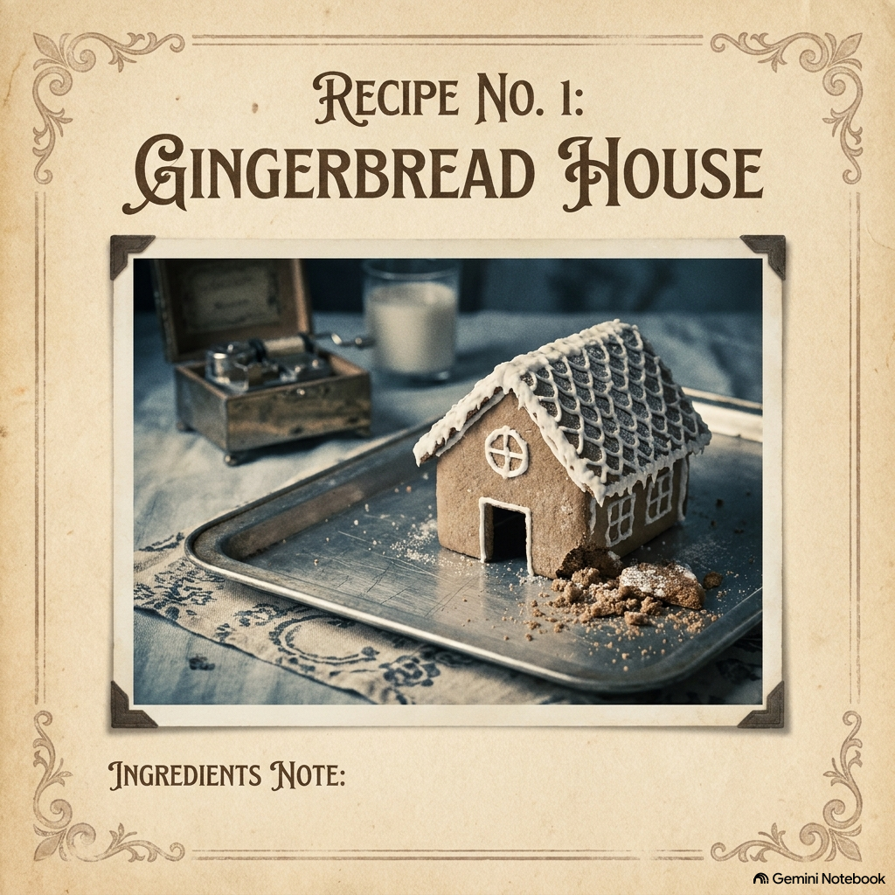

RECETA N° 01
GINGERBREAD HOUSE

Fig. 1 — Casita de jengibre desmoronada sobre bandeja de peltre.INGREDIENTS & PREPARATION
• 1 measure of gentle words that fail to ignite
• "Baking with every gentle thing you do,
• The pieces of this gingerbread house for two.
• If this gingerbread house comes falling down,
• It’s 'cause the cookies I bake are crumbling to the ground...
• Because I need some fire, some heat to believe:
• If there is love, why is there nothing I feel?"
ESTUFA: SIN ENCENDIDO // 0°C
BPM: 72 • CAJITA DE MÚSICA DESAFINADA • BAJO MINIMALISTA
Intento con todas mis fuerzas que esto sea un hogar para los dos. Eres dulce, paciente y amable como nunca nadie había sido conmigo en la vida. Pero por más que sigo al pie de la letra el recetario, el horno simplemente no calienta. La masa queda cruda por dentro y se deshace apenas la toco. Me aterra ver cómo me miras con amor mientras yo sostengo una galleta que se rompe entre los dedos preguntándome: ¿esto es el amor?, o ¿por qué no siento nada de fuego al probarlo?